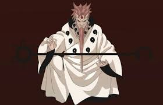
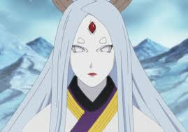
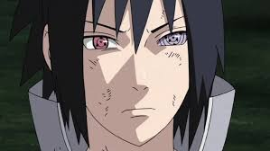

|  |
1. Hagoromo Otsutsuki (Sage of Six Paths) - The legendary figure who gave ninjutsu to the world. He
possesses the Rinnegan and incredible power, being the son of Kaguya Otsutsuki. |
|  |
2. Kaguya Otsutsuki - The progenitor of chakra on Earth and the final antagonist of the series. She
possesses god-like powers, including Byakugan, Rinne Sharingan, and the ability to manipulate
dimensions. |
 |
3. Naruto Uzumaki - The main protagonist, Jinchuriki of the Nine-Tails, and later becomes the
Seventh
Hokage. His abilities include Sage Mode, Six Paths Sage Mode, and access to the power of all nine
Tailed Beasts. |
|  |
4. Sasuke Uchiha - A prodigy of the Uchiha clan, Sasuke possesses the Sharingan and later the Rinnegan.
He is highly skilled in various forms of ninjutsu, including Amaterasu and Chidori. |